Gold
Key Comics:
A era de ouro dos quadrinhos de Jornada?
por Fernando
Rodrigues
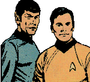 Durante
12 anos, o universo de Jornada nas Estrelas foi
transportado para os quadrinhos por uma editora chamada Gold Key
Comics. Para os brasileiros, acostumados a nomes de editoras como
Marvel, DC, e uma meia dzia de editoras menores, o nome pode
parecer desconhecido. Mas a Gold Key tornou-se popular durante os
anos 60 ao se especializar na publicao de adaptaes de sries
televisivas. Sua proprietria, a Western Printing and
Lithographing Co., atravs de uma parceria com a Dell Comics,
desde 1938 publicava quadrinhos, tendo sido a primeira a obter os
direitos para publicar revistas com personagens da Walt Disney.
Com o trmino da parceria com a Dell, a Gold Key foi criada em
1962, dando continuidade s licenas de propriedade da Western.
Os
quadrinhos publicados pela Gold Key a partir de 1962 incluem: A
Famlia Adams, Andy Panda, Formiga Atmica, Acredite se Quiser,
Buck Rogers, Pernalonga, Patolino, Pato Donald, Flash Gordon, Os
Flintstones, Pateta, Os Jetsons, Jonny Quest, Luluzinha, Perdidos
no Espao, Mickey Mouse, Super Mouse, Peanuts, Pantera
Cor-de-Rosa, Pluto, Popeye, Papa-Lguas, Scooby Doo, Shazzan,
Space Ghost, Tom & Jerry, Manda-Chuva, Piu-Piu, Pica-Pau, Z
Colmia, entre outros. E isso s para citar os mais conhecidos
pelos brasileiros.
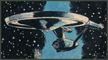 Assim,
no causou nenhuma surpresa no mercado editorial quando, em 1967,
a Gold Key adquiriu junto Desilu os direitos de publicao de
quadrinhos baseados em Jornada. E esses quadrinhos acabaram
por entrar na histria do franchise, por dois motivos: primeiro,
por ser a estria de Jornada neste veculo de comunicao;
segundo, pela qualidade incrivelmente baixa do material publicado.
Alis, essa falta de qualidade acabou, com o tempo, conferindo
uma fama particular aos quadrinhos. Hoje, os raros exemplares
existentes chegam a ser comercializados por, no mnimo, US$
500,00.
O principal problema,
em especial nos primeiros 37 nmeros, era que a responsabilidade
pela revista estava a cargo de Alberto Giolitti e Nevio Zaccara,
dois italianos que claramente nunca assistiram aos episdios de Jornada.
Trabalhando a partir de fotos da produo, a dupla conseguiu
desenhar de modo apropriado alguns rostos e equipamentos. Mas
ainda desconcertante ver chamas saindo das naceles da
Enterprise em vo, grupos de descida usando mochilas, o interior
da nave parecido com o de um submarino, Klingons de pele rosada e
carecas, a Enterprise
pousando em planetas. Toda a tripulao utilizava uniformes
verde-limo, exceo de Spock, que vestia sua tradicional
camisa azul.
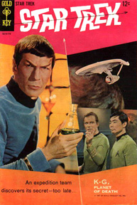 A
primeira edio, com roteirista
no creditado, foi um show parte. A tripulao
utilizava-se de um sensor de espao (a tela da ponte) para
encontrar planetas frteis (Classe M), quando o grupo de
explorao (grupo de descida) se dirigia cmara de
transporte (sala de transporte) para se encaminhar ao planeta.
Esses espaonautas (tripulantes) se comunicavam com a nave
atravs de "radio-TV" (comunicadores) e usavam raios
laser destruidores (feisers), que carregavam em coldres
similares aos usados no velho oeste.
Mais
estranho ainda era ver o Capito Kirk chamar todas as tripulantes
femininas de querida ou acompanhar o procedimento da tripulao
ao encontrar um planeta habitado por vida vegetal hostil. Nesse
caso, o raio laser destruidor da nave para eliminar essa
forma de vida! "Ns devemos orbitar este terrvel pequeno
globo at que todas as folhas sejam dizimadas por nossos raios
laser, declara um emotivo Spock para um indeciso Kirk.
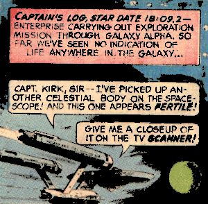
As
primeiras edies traziam na capa montagens de fotos da produo.
Apenas a partir da edio nmero 10 que as capas passaram a
ser desenhadas a cada nmero. Porm, a maior caracterstica desses quadrinhos continuava a ser a
forte tendncia a histrias com mais apelo ao pblico
infanto-juvenil, apresentando monstros espaciais e fenmenos sem
qualquer fundamento cientfico.
Com o passar do tempo, esses quadrinhos foram
lentamente qanhando uma qualidade maior, medida que escritores
como um jovem Len Wein (que mais tarde seria co-criador do
Monstro do Pntano), Arnold Drake e John Warner assumiram o
controle sobre a publicao. A arte da revista tambm
melhorarou com a entrada de Al McWilliams a partir da edio nmero
38.
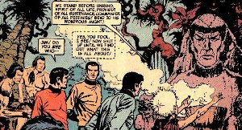
Os
personagens
Os quadrinhos de
Jornada publicados pela Gold Key mostravam as aventuras da tripulao
da USS Enterprise, que operava sob os auspcios da Frota Estelar,
parte integrante da Federao Unida de Planetas. A tripulao
da nave era exatamente a mesma vista na srie de TV.
James
T. Kirk
Posto: capito. Posio: oficial comandante da nave estelar
Enterprise.
Kirk apareceu em todas as edies publicadas
pela Gold Key. Assim como na TV, era a personagem central de todas
as histrias.
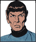 Senhor
Spock
Posto: tenente-comandante. Posio:
primeiro-oficial e oficial de cincias da nave estelar Enterprise.
Assim como Kirk, Spock aparece em todas as edies
publicadas pela Gold Key.
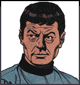 Doutor
Leonard McCoy
Posto: tenente-comandante. Posio: oficial mdico-chefe
a bordo da nave estelar Enterprise.
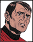 Montgomery
Scott
Posto: tenente-comandante.
Posio: engenheiro-chefe da nave estelar Enterprise.
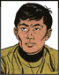 Piloto
Sulu
Posto: tenente. Posio: piloto e oficial de armas
a bordo da nave estelar Enterprise.
Uhura
Posto: tenente. Posio: oficial
de comunicaes da nave estelar Enterprise.
Uhura apareceu em poucas edies, e em nenhuma
foi parte importante da trama.
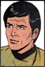 Pavel
Chekov
Posto: alferes. Posio: navegador a bordo da nave estelar
Enterprise.
Chekov apareceu em poucas edies, e em nenhuma
foi parte importante da trama.
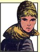 Janice
Rand
Posio: ordenana pessoal do
Capito Kirk a bordo da nave estelar Enterprise.
Rand aparece apenas na primeira edio.
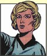 Christine Chapel
Posto: Tenente. Posio: Enfermeira-Chefe a bordo da nave
estelar Enterprise.
Chapel apareceu em poucas edies, e em nenhuma
foi parte importante da trama.
Inimigos
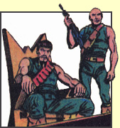 Klingons
Apesar
de serem os inimigos que mais vezes apareceram ao longo da Srie
Clssica, foram mostrados nos quadrinhos em poucas ocasies.
Se na televiso os Klingons eram morenos e possuam bastante
cabelo, nos quadrinhos tinham pele clara e eram freqentemente
carecas. Seu uniforme nos quadrinhos tambm era diferente. Ao invs
de serem pretos com uma faixa diagonal dourada, tornaram-se
verdes, sem mangas e com uma faixa vermelha.
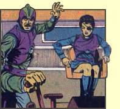 Romulanos
Assim como os Klingons, apareceram poucas vezes nos
quadrinhos, e, quando surgiam, raramente eram os personagens mais
marcantes. A linha editorial se concentrava em mostrar viles
novos a cada histria.
Naves
e equipamentos
USS
Enterprise
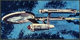 Nave
da Federao, da classe Constitution, comandada por James Kirk. A
Enterprise era uma das doze naves com velocidade maior que a da
luz lanadas pela Frota Estelar em 2260. Notem, na imagem ao
lado, os j citados jatos de fogo deixados pelas nacelas da nave.
Nave
auxiliar Galileo
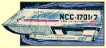 Nave
auxiliar padro da Federao, era lanada a partir do hangar
existente na Enterprise. Usada para pousar em planetas e em
viagens entre naves e bases estelares.
Nave
auxiliar Variant
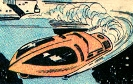 Outro
modelo de nave auxiliar usado pela Frota Estelar. Mostrada apenas
na edio nmero 14.
Pod
utilitrio
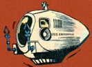 Pequeno
veculo para trs ocupantes, usado pela Federao para
realizar reparos em naves e bases estelares. Mostrado na edio
nmero 13.
Cruzador de batalha Klingon
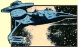 Cruzador
de batalha da classe D-7 usado pelo Imprio Klingon. Comparvel
em velocidade e armas prpria Enterprise. Mostrado apenas na
edio 61.
Nave Romulana
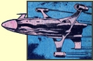 Nave
padro usada pelo Imprio Romulano na dcada de 2260, para
patrulha da zona neutra entre seu territrio e o da Federao.
Notem o design, diferente do visto ao longo da srie de TV.
Mostrada apenas na edio nmero 12.
Windjammer
Pirate Starship
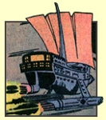 Nave
estelar usada por piratas liderados pelo Capito Black Jack Nova.
(Edio
#12 "The Flight of the Buccaneer")
Windjammer
Pirate Shuttlecraft
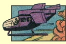 Nave
auxiliar utilizada pelos piratas, lanada a partir da Windjammer.
Estas naves eram usadas pelos piratas para aterrissar em
planetas.
(Edio
#12 "The Flight of the Buccaneer")
Space Transport
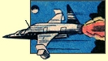 Pequena
nave usada por Kirk, Spock e McCoy quando embarcaram em uma misso
disfarados como piratas. A Enterprise perseguiu esta nave com a
equipe de Kirk a bordo para convencer observadores de que eles
eram procurados pela Federao. (Edio
#12 "The Flight of the Buccaneer")
Federation
Transport
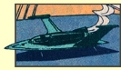 Nave
de transporte pessoal usada pelo investigador especial da
Federao Jay Nordyke.
(Edio
#19 "The Haunted Asteroid")
Earth
Transport Craft
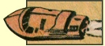 Pequena
nave de baixa altitude usada na Terra durante a dcada de 2260
para transporte intracontinental. (Edio
#39 "Prophet of Peace")
Earth
Security Police Craft
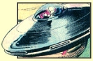 Nave
usada pelas foras de segurana da Terra na dcada de 2260.
(Edio
#40 "Furlough to Fury")
Federation
Personal Transport
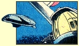 Usada
na data estelar 19:26:03 para levar a consultora tcnica da Frota
Estelar Barbara McCoy para a
USS Enterprise.
(Edio
#43 "World Beneath
the Waves")
Federation
Shuttlecraft
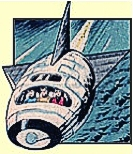 Usada
por Kirk e Spock para pegar o professor Patrick Moore no planeta
M317 e transport-lo para uma conferncia cientfica em Beta
Aurigae.
(Edio
#48 "Sweet Smell of Evil")
Experimental
Starfleet Hyperwarp Ship
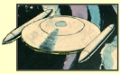 Novo
design criado para testar um dispositivo de hyperwarp drive capaz
de impulsionar naves velocidade de dobra 13. (Edio
#49 "A Warp in Space")
Special
Federation Missile
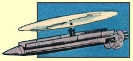 Mssil
especial da Federao usado pela tripulao da Enterprise para
demonstrar aos Sanoorans os meios qumicos usados pela Federao
para eliminar radiao de solos contaminados.
(Edio
#50 "The Planet of No Life")
Federation
Transport Spaceship
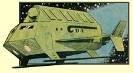 Nave
de transporte de mdio porte. Kirk, Spock e Scotty a usaram para
descobrir atividades de trfico de animais no planeta Grotus.
(Edio
#54 "Sport of Knaves")
Harry
Mudd's Spaceship
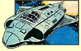 Pequena
nave usada por Harry Mudd em meados de 2260, quando vendeu a
Klingons diltiun instvel.
(Edio
#61 "Operation Con Game")
Agradecimentos especiais a Curt Danhauser, que
gentilmente autorizou o autor a utilizar o material de seu site: http://curtdanhauser.com/Main.html
|